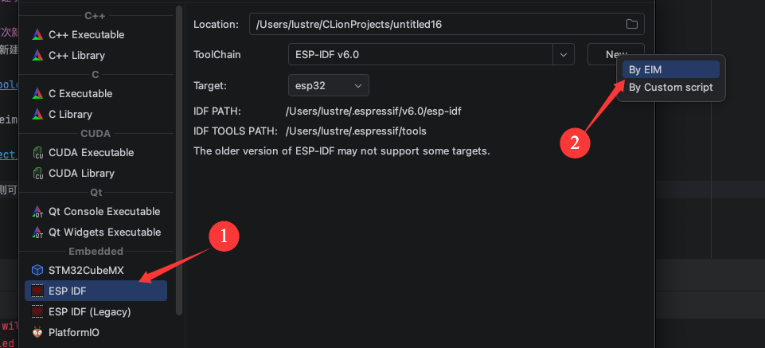
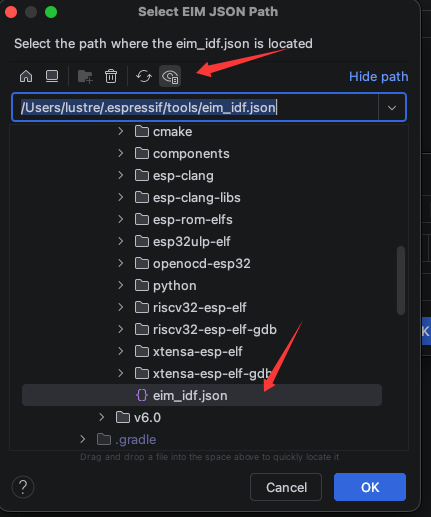
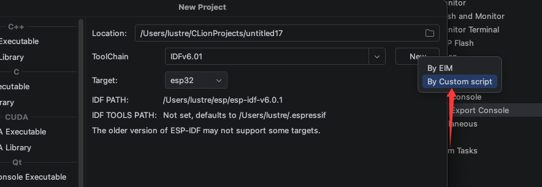

MacOs下新建项目
选择通过EIM安装的ESP-IDF
通过EIM安装ESP-IDF
新建项目
首次新建项目通过EIM创建工具链
选择新建方式为EIM

选择eim_idf.json 文件 并选择具体esp-idf，至于工具链名称默认会生成，也可以自定义

确认后则可以新建一个工具链
源码安装
需要手动安装一些组件。 参考macos安装具体的组件
克隆代码
mkdir -p ~/esp
cd ~/esp
git clone --recursive https://github.com/espressif/esp-idf.git
以idf6.0为例，将idf6.0的release中附件esp-idf-v6.0.1.zip的url复制出
然后替换github.com 到 dl.espressif.cn/github_assets
mkdir -p ~/esp
cd ~/esp
curl -O https://dl.espressif.cn/github_assets/espressif/esp-idf/releases/download/v6.0.1/esp-idf-v6.0.1.zip
unzip esp-idf-v6.0.1.zip
切换到一个具体的稳定版本(可选)
例如v6.0.1标签
cd esp-idf
git checkout v6.0.1
git submodule update --init --recursive
安装
安装会下载一些东西,根据需要选择后续是否使用镜像站
cd ~/esp/esp-idf-v6.0.1
./install.sh
cd ~/esp/esp-idf-v6.0.1
export IDF_GITHUB_ASSETS="dl.espressif.cn/github_assets"
export PIP_INDEX_URL=https://mirrors.aliyun.com/simple
export PIP_TRUSTED_HOST=mirrors.aliyun.com
./install.sh
新建项目
有以下两种方法新建项目
使用自定义脚本创建工具链
安装完成之后选择以自定义脚本方式选择export.sh创建工具链，可以在创建工具链时自定义工具链名称

或者使用旧版创建方式

会自动生成一个工具链，需要后续自己重命名，以便区分不同版本
01 五月 2026